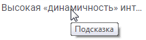
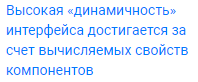

Свойства компонента интерфейса, унаследованного от компонента «Надпись»
Текст, отображаемый в несколько строк, без возможности редактирования. Он может:
- выполнять переход по указанной гиперссылке (Ссылка, Гиперссылка, ОткрыватьВНовомОкне);
- иметь подсказку (Подсказка, ВидимостьПодсказки).

Иерархия наследования
- Компонент (абстрактный)
Свойства
- ВидимостьПодсказки

- ВыделенныеФрагменты
- Массив фрагментов, которые вы хотите «подсветить» в надписи
- ВыделенныйТекст
- Текст, который вы хотите «подсветить» в надписи. «1С:Кабинет сотрудника» будет искать указанный текст без учета его регистра
- Гиперссылка
- Признак того, что компонент принимает внешний вид гиперссылки, может принимать фокус и вызывает событие ПриНажатии. В противном
случае надпись имеет вид обычной надписи, не может принимать фокус, а нажатие обрабатывают родительские компоненты

- Заголовок
- Текст надписи
- ВыравниваниеСодержимогоПоГоризонтали
- Горизонтальное выравнивание текста в надписи: Начало, Центр, Конец, ПоШирине, Авто — значение Начало.
- ВыравниваниеСодержимогоПоВертикали
- Вертикальное выравнивание текста в надписи: Верх, Центр, Низ, ПоБазовойЛинии (по нижней линии букв), Авто — значение ПоБазовойЛинии.
- МаксимальнаяВысотаВСтроках
- Максимальная высота надписи в строках. Значение 0 означает, что высота не ограничена.
- МинимальнаяВысотаВСтроках
- Минимальная высота надписи в строках. Вертикальный размер надписи не станет меньше этого значения, несмотря на содержимое текста. Это свойство можно использовать для выравнивания высоты строк в таблицах или в других компонентах
- ОткрыватьВНовомОкне
- Признак того, что ссылка, указанная в свойстве Ссылка, будет открыта в новом окне (вкладке) браузера
- Подсказка
- Текст подсказки, который «1С:Кабинет сотрудника» покажет при наведении на надпись
- РазрешитьСжатие
- Признак того, что «1С:Кабинет сотрудника» может сжать надпись
- РастягиватьРодителя
- Признак того, что «1С:Кабинету сотрудника» нужно растянуть родительский компонент. Если равно Ложь, то надпись не будет влиять на размеры родительского компонента
- Ссылка
- Ссылка, которую откроет «1С:Кабинет сотрудника» при нажатии на компонент
- СтилиОформления
- Указанные стили применяются в порядке перечисления в массиве при отображении надписи
- ЦветТекста
- Цвет текста надписи
События
- ПриНажатии
-
«1С:Кабинет сотрудника» вызывает это событие при нажатии на надпись, если свойство Гиперссылка
равно ИстинаПример YAML-файла:
ВидЭлемента: КомпонентИнтерфейса ОбластьВидимости: Подсистема Ид: e424be94-aa77-4808-9d52-f51aebe6182a Имя: МояНадпись Наследует: Тип: Надпись ПриНажатии: ОбработчикПриНажатииСигнатура обработчика события на встроенном языке:метод ОбработчикПриНажатии(Источник: Надпись, Событие: СобытиеПриНажатии ;